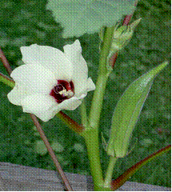

HORT 281 :: Lecture 06 :: ORIGIN, AREA, PRODUCTION, VARIETIES, PACKAGE OF PRACTICES FOR BHENDI

Origin, area, production, varieties, package of practices for bhendi
(Syn: Lady’s finger, Bhindi)
(Abelmoschus esculentus (L.) Moench) (2n = 130)
(Hindi: Bhendi)
Okra is predominantly a crop of tropics and subtropics. It occupies fifth position, next to tomato, in area under vegetables in the country with a production of 33.24 lakh metric tonnes from an area of 3.47 lakh hectares. The crop is cultivated for its young tender fruits, used in curry and soups after cooking. It is a good source of vitamins A and B, protein and minerals. It is also an excellent source of iodine and is useful for the treatment of goiter. Fruit is useful against genitor-urinary disorders, spermetorrhoea and chronic dysentery. Fruits are also dried or frozen for use during off-season. Dried fruit contain 13-22% edible oil and 20-24% protein and is used for refined edible oil. Dry fruit skin and fibres are used in manufacture of paper, card board and fibres. Root and stem are used for clearing cane juice for preparation of jaggery.
Origin and distribution
Okra originated in tropical and subtropical Africa. Existence of a large number of related species with wide variability and dominant characters suggest possible role of India as a secondary centre of origin.
India is the largest producer of okra in the world. It is also used as a vegetable in Brazil, West Africa and many other countries. In India, major okra growing states are Uttar Pradesh, Bihar and West Bengal.
Taxonomy and botany
Cultivated bhendi belonging to Malvaceae was earlier placed under Hibiscus esculentus L. Since its calyx, corolla and staminal column are fused together and fall down at anthesis (caduceus), it was renamed as Abelmoschus esculentus L. in Hibiscus, calyx is persistent. Cultivated bhendi is an annual herb with duration of 90-100 days. Flowers are bisexual and often cross-pollinated. Time of anthesis is 8.00-10.00 a.m. Dehiscence of anthers occurs 15-20 minutes after anthesis and is completed in 5-10 minutes. Pollen fertility is maximum in the period between one hour before and after opening of flower. It takes 2 to 6 hours for fertilization after pollination. Stigma is receptive at opening of flower and hence, bud pollination is not effective in okra. Fruit is a capsule. Usually fibre development starts from fifth to sixth day.
Most of cultivated varieties are amphidiploids with 2n=130. A. esculentus is noted for its chromosome polymorphism and 2n ranges from 72 to 144. It tolerates addition or deletion of one or a few chromosomes. The chromosome number of A .esculentus is 2n=130 which is evolved by crossing. A. tuberculatus (2n=58) with A. ficulneus (2n=72). The F1 developed was subjected to colchicines treatment to make it an amphidiploid. A. esculentus (2n=130).
Similarly, A. caillei, a complex polyploidy, can be evolved by colchicines treatment of F1 of cross between A. manihot and A. esculentus.
Four species viz., A. esculentus, A. manihot, A. caillei and A. moschatus include both cultivated and wild forms.
Crop improvement
Yellow vein mosaic virus disease being a serious problem in okra cultivation, concerted effort was made to develop high yielding as well as YVMV resistant varieties in the country. With development of YVMV resistant variety, Pusa Sawani, most of the primitive low yielding local cultivars has become less significant. After break down of resistance of Pusa Sawani, research on virus resistance was intensified at various research centres in India and it resulted in development of a number of YVMV resistant varieties.
Various methods like plant introduction (Perkin’s Long Green), single plant selection and pure line selection from local collections (Pusa Makhmali, Salkeerthi), selection from bi-parental crosses (Pusa Sawani from IC 1542 x Pusa Makhmali) and selection from complex crosses (sel 2 from (Pusa Sawani x Best 1) x (Pusa Sawani x IC 7194) were used. YVMV resistant variety Susthira developed at the Kerala Agricultural University is A. caillei. Pedigree selection in the segregating populations of resistant YVMV varieties resulted in Hisar Unnat (Sel 2-2 x Parbhani Kranthi) and Varsha Uphar (Lam selection 1 x Parbhani Kranthi). Related wild species were also utilized in development of YVMV varieties like Parbhani Kranti (A. esculentus cv. Pusa Sawani x A. manihot ssp. Manihot), Punjab 7 (A. esculentus cv. Pusa Sawani x A. manihot ssp. Manihot cv. Ghana) and Arka Abhay (A. esculentus x A. manihot ssp. Tetraphyllus). MDU 1 and Punjab 8 (EMS 8) were developed through mutation breeding using gamma rays and EMS respectively.
Varieties
Bhendi varieties and cultivars differ in growth habit, height of plants, presence of purple pigmentation on plant parts, length, colour and number of ridges of fruit etc. A brief description of improved varieties developed in the country is given below:
Developing institution |
Variety |
Special features |
IIHR, Bangalore |
Arka Abhay |
Developed through hybridization, back crossing and selection from |
|
(Sel.4)* |
A. esculentus x A. tetraphyllus ssp. tetraphyllus. Resistant to YVMV. Tolerant to fruit borer. Fruits 5-ridged, dark green, medium long. Productivity 10.5 t/ha. |
|
Arka Anamika |
Developed through hybridization back crossing and selection from A. esculentus x A. tetraphyllus ssp. tetraphyllus |
|
(Sel 10)* |
Resistant to YVMV. Fruits 5-ridged, green medium long. Productivity 11.5 t/ha. |
IARI, New Delhi |
Pusa Makhmali |
Fruits medium long. Productivity 8-10 t/ha. Susceptible to YVMV. |
|
Pusa Sawani |
Fruits 5-ridged, green medium long. Productivity 8-10 t/ha. Initially resistant and later became susceptible to YVMV. |
|
Pusa A 4 |
Plants with short internodes. Fruits 5-ridged, dark green and medium long with excellent shelf life. Productivity 10-12 t/ha. Resistant to YVMV, Jassids and fruit borer. |
|
Selection 2-2 |
Fruits green, tender and long (16-20 cm) and 5 ridged. |
IIVR, Varanasi |
VRO 3* |
Resistant to ELCV. Fruits 5-ridged, green, medium long. Productivity 11.2-16.5 t/ha. |
|
VRO 4* |
Resistant to YVMV and ELCV. Fruits 5 ridged, green, medium long. Productivity 16.0 t/ha. |
Kerala Agricultural University. |
Kiran |
Shy branching plant with light green and long fruits; Fruit length 2-30 cm; Fruit weight 25-30 g; Productivity 11.21 t/ha. |
|
Salkerthi |
Attractive and long light green fruits; Fruit length 24-30 cm; No of ridges on fruit 5; Days to first harvest 44; Productivity 16.2 t/ha. |
|
Aruna |
Attractive red coloured long fruits; Fruit length; 25-30 cm; No. of ridges on fruit 7; Productivity 15.8 t/ha. |
|
Susthira (A.caillei). |
Mosaic tolerant, late and long duration variety suitable for homesteads during kharif season. Fruits green coloured; Fruit length: 22 cm; No. of ridges on fruit 5; Productivity 18 t/ha. |
Tamil Nadu Agricultural University |
MDU 1 |
Developed through gamma irradiation of seeds of Pusa Sawani. Plants compact with close arrangement of nodes. Fruits 5-ridged, light green, medium long. Productivity 10-11 t/ha. Susceptible to YVMV. |
|
CO.1 |
Fruits pinkish red in colour. Productivity 12.0 t/ha. Susceptible to YVMV. |
Haryana Agricultural University, Hisar |
Varsha Uphar (HRB-9-2)* |
Derived from Lam selection x Parbhani Kranti. Resistant to YVMV. Fruits 5-ridged, dark green, medium long; Productivity 9.8 t/ha. |
|
Hisar Unnat (HRB 55)* |
Plants 3-4 branched, early and high yielding (12-13t/ha). |
Punjab Agricultural University, Ludhiana. |
Punjab 7 |
Developed through back cross method form A. esculentus cv. Pusa Sawani x A. manihot ssp. manihot cv. Ghana. Resistant to YVMV. Jassids and cotton boll worm. Fruits 5-ridged, dark green, medium long. Petiole base is deeply pigmented. Productivity 9.5 t/ha. |
|
Punjab Padmini |
Selection made at F8 generation of cross between F1 of A. esculentus cv. Rashmi x A. manihot ssp. manihot with F2 of A. esculentus cv. Pusa Sawani x A. manihot ssp. manihot. Fruits dark green, 15-20 cm long and five ridged. Pigmentation on stem, petiole and lower basal veins of leaves. Resistant to YVMV, Jassids and cotton boll worm. Yield 10-12 t/ha. |
|
Punjab 8 (EMS 8) |
Induced mutant from Pusa Sawani using EMS (1%). Fruits 5-ridged, dark green, medium long. Field tolerance to YVMV and resistance to fruit borer. Fruits 5-ridged, green and 15-16 cm long. |
MAU, Parbhani |
Parbhani Kranti* |
Developed through back cross method form A. esculentus cv. Pusa Sawani x A. manihot ssp. manihot. Fruits 5-ridged, dark green, medium long. Productivity 9.0 – 11.5 t/ha. |
CSAUA&T, Kanpur |
Azad Kranthi |
Fruits 5-ridged, shining green with long beak. Productivity 12.5 t/ha. |
YSPUH&F, Solan, H.P. |
Harbhajan Bhindi |
Perkins Long Green was released as Harbhajan Bhendi. Fruits long tapered green and 8 ridged. |
* Varieties released / identified by AICRP (Vegetables).
Exploitation of hybrid vigour
A large number of seeds in a fruit and large size of flowers are favourable factors for exploitation of heterosis in bhendi. A number of hybrids resistant / tolerant to YVMV were developed in public and private sectors. Most of the hybrids were developed by hand emasculation and hand pollination. Two F1 hybrids developed by TNAU are CO.2 and CO.3.
CO.2: AE 180 x Pusa Sawani. Fruits very long (22-25 cm), thick, 7-8 ridged and light green in colour. Productivity 15-16 t/ha. Susceptible to YVMV.
CO.3: Parbhani Kranti x MDU.1. Fruits very long (22-25 cm), thick, 7-8 ridged light
Green in colour. Productivity16-18 t/ha. Moderately resistant to YVMV.
COBhH 1: Varsha Uphar x Pusa A4 (T). Fruits are dark green, long, slender with five ridges. High yield – 22.1 t/ha. Resistance to yellow vein mosaic virus
Climate
Bhendi is a typical tropical or sub-tropical crop and cannot tolerate frost. Performance is also adversely affected by drought, low night temperature and shade. Even though fertilization and seed set are affected during high rainfall, growth of plant and subsequent productivity is exceptionally good rainfall areas. Under high temperature and low humidity, plant growth is stunted and will be shorter in stature. Similarly flowers drop when day temperature exceeds 42oC.
Soil
Okra prefers loose, well drained and rich soil. The ideal pH for growth of plants is 6-8.
Season
In areas where winter is mild, bhendi is grown throughout the year. Since it cannot tolerate frost and low temperature, only two crops are taken in plains of North India. As kharif crop, seeds are sown from May to July and as a spring summer crop, sowing is done during February-March. In hills of North India bhendi is sown during March-April.
Seed rate and spacing
During summer, vegetative growth is relatively less and seeds are sown at a closer spacing of 45 x 20 cm or even less. Seed rate required is 18-20 kg / ha. During kharif, plant grows vigorously with more branching and seeds are sown at wider spacing of 60 x 30 cm for branching types and 45 x 30 cm for non-branching types. Seed rate recommended for kharif crop is 8-10 kg/ha. For harvesting smaller fruits for export, three rows planting with a spacing of 20-30 cm between rows and 20 cm within a row is advantageous. Distance between two sets is kept as 60 cm. This system has the unique advantage of easiness in inter cultural operations, harvesting, application of plant protection chemicals, etc.
Land preparation and sowing
Field is ploughed thoroughly for 2-3 times for making soil to a fine tilth. Ridges and furrows or raised beds are prepared and dibbling on sides of ridges or on raised beds sows seeds. Soak seeds for 6-12 hours before sowing to enhance germination during summer.
Manuring and fertilizer application
Apply 20-25 t of farmyard manure as basal dose at the time of final ploughing. A dose of 150 kg each of N, P2O5 and K2O is recommended for Pusa Sawani in the coordinated trials. NPK recommendation varies from state to state and a lower dose of 50:8:30 kg N is recommended under Kerala condition. One third dose of N, full P and K are to be applied as basal dose. Remaining N has to be applied in two split doses, 4 weeks after sowing and at flowering and fruiting stages. Split application of N in soil at every 3rd picking is advantageous for getting high yield, for increasing number of harvests and to maintain size of fruits towards last harvests.
Application of Fertilizers in Tamil Nadu
Apply FYM 25 t/ha, N 20 kg, P 50 kg and K 30 kg/ha as basal and 20 kg N/ha 30 days after sowing. Apply Azospirillum and Phosphobacteria each at 2 kg/ha mixed in 100 kg of FYM before sowing.
Irrigation
Water stress at flowering and fruiting stages will drastically influence growth of plants, size of fruits and yield. Immediately after sowing, field is irrigated. Subsequent irrigation is given at fixed intervals depending on texture of soil and climate. In black soils, irrigation is done at 5-6 days interval.
Interculture
Weed growth should be under control till crop canopy covers fully. This is achieved by frequent hoeing, weeding and earthing up. Used of weedicides like Lasso (2 kg a.i./ha) or fluchloralin (1.5 kg/ha) or Metolachlor (1.0 kg a.i./ha) and one hand weeding at 45 days after sowing was very effective and financially viable under the All India Co-coordinated trials.
Harvesting and yield
Harvest fruits when they attain maximum size but still tender. Fruits of 6-8 cm long are preferred for export purposes. This is usually attained by 5-6 days after opening of flower. Harvesting is done in alternate days with a knife or by bending pedicel with a jerk. For harvesting, cotton cloth hand gloves should be used to protect fingers from stinging effect. It is advisable to harvest in morning hours since fruit hairs will be soft. Sprinkling water on pods during night will keep them cool and fresh for market.
Post-harvest management
Fruits after harvesting are graded and filled in jute bags or baskets or perforated paper cartons and sprinkled with water. Pre-cooling of fruits before packing maintains turgidity of fruits and will save it from bruises, blemishes and blackening. This is usually done before packing fruits in perforated cartons of 5-8 kg before transporting to refrigerated van for export.
Yield 6.0 – 8.0 t / ha for spring-summer crop
10 – 12.5 t / ha for kharif crop.
Pests and Diseases
Diseases
Yellow Vein Mosaic Virus Disease
This is the most serious disease of bhendi. Characteristic vein clearing is the typical symptom and yield loss may be up to 100% depending on stage of occurrence of the disease. Fruits of virus affected plants turn to cream or white in colour. Virus is transmitted through a whitefly Bemisia tabaci. Removal of weeds susceptible to mosaic from nearby fields, control of white fly, uprooting and burying of affected plants, adjusting time of sowing and cultivation of resistant varieties like Arka Anamika, Arka Abhay, Susthira etc. are recommended for raising a disease free crop. Recently, a hybrid COBhH 1 has been released from HC & RI, TNAU Coimbatore which is resistant to YVMV.
Cercospora leaf spot
This disease is serious when there is high humidity in atmosphere and is common in a seed crop. Sooty, black mouldy growth of pathogen appear as under surface of leaves and finally leaves dry off and fall down. Mature pods are also attacked and show blackish spots. Spraying with Bavistin (0.1 g /1) or Bordeaux mixture at fortnightly interval will control the disease.
Powdery mildew
This is caused by a fungus Erysiphae chicoracearum under prolonged humid conditions. White powdery pistules appear on lower surface of leaves resulting in yellowing and death of leaves. Spraying of wettable sulphur (2g/l) at fortnightly interval is recommended for control.
Insect Pests
Jassids (Amrasca biguttula biguttula)
Wedge shaped pale green jassids suck sap from undersurfaces of leaves causing marginal yellowing, cupping and drying of leaves. Due to intense hopper burn, defoliation also occurs. Infestation is serious during summer. Prophylactic spray of neem oil-garlic mixture at fortnightly intervals is advantageous for avoiding pest incidence.
Fruit borer
Borer infestation results in toppling and death of young seedlings, withering and drying up of individual leaves and central shoot. Fruits will be damaged severely. Spray of carbaryl or thiodan or endosulfan or fenvalerate or cypermethrin or deltamethrin is effective for control of borer. Summer ploughing and clean cultivation are also helpful in reducing pest infestation.
Nematodes
Root knot nematode infects roots causing galls premature leaf fall, wilting and decline in growth and fruit production. Symptoms in the field generally appear as well defined patches. Crop rotation with non host plants like wheat, rice and corn should be practiced as a regular measure. Successive deep ploughing during summer and soil solorisation gives very good control. Treating field with nematicides also can be adopted.
Seed production
For seed production, adjust sowing in such a way that dry weather coincides with maturation and drying of pods and incidence of yellow vein mosaic disease is minimum. Being an often cross-pollinated crop, provide an isolation distance of 400 m from other varieties. Field inspection and rouging should be conducted at pre-flowering, flowering and fruiting phases. Harvesting of initial two fruits will be helpful in promoting growth of plants. Average seed yield is 1.0-1.5 t/ha.
MDU1
- This variety was evolved at Agricultural College and Research Institute, Madurai, TNAU, by gamma irradiation of the seeds of Pusa Sawani.
- The fruits are light green in colour with long stylar end.
- The plants are compact with close arrangement of nodes.
- It is also susceptible to yellow vein mosaic disease.
- Yield is 10-11 tonnes/ha.
Lam Hybrid Selection-1 (Haritha)
- Developed by ANGRAU and released for cultivation in the state during 1983.
- Plant height 120-150cm with occasional branching tendency.
- Fruits are slender, long, and green and five ridged.
- Tolerant to yellow Vein mosaic virus (YVMV).
Janardhan
- It was released by ANGRAU. The plant is vigorous, branching.
- Fruits are small 6-8 cm long suitable for canning and export.
- Tolerant to yellow vein mosaic.
Punjab Padmini
- This was developed at Punjab Agricultural University, Ludhaina fruits are dark green in colour and each fruit weighs 20g.
- It tolerates yellow vein mosaic to certain extent under field conditions.
CO 1
- This is a pure line selection from Hyderabad "Red Wonder".
- The fruits are pinkish red in colour.
- It has got a yield potential of 12 tonnes/ha.
- It is susceptible to yellow vein mosaic disease.
- It was developed at the Department of Horticulture, Tamil Nadu Agricultural University, Coimbatore.
CO 2
- It is a F1 hybrid developed at the vegetable department of the College of Horticulture, TNAU, Coimbatore.
- The fruits are very long 22-25 cm. thick with 7-8 edges and light green in colour.
- It has a yield potential of 15-16 tones/ha.
- However it is highly susceptible to yellow vein mosaic disease and hence cannot be recommended for growing during summer season.
- Because of its bigger fruit size it can be used for preparation of dehydrated products.
CO 3 (Hy8)
- It is an F1 Hybrid between Prabhani Kranti and MDU 1 and has a yield potential of 16-18 tones/ha.
- It is moderately resistant to yellow vein mosaic.
- Suitable for growing during kharif as well as summer.
- It was developed at Dept. of Olericulture, Horticultural College and Research Institute, TNAU, Coimbatore
***********
1. Largest producer of okra in the world?
a. China |
b. USA |
c. India |
d. Japan |
2. ______ is rich in stem fibres and commonly used in paper industry
a. Tomato |
b. Bhendi |
c. Soybean |
d. Watermelon |
3. The vector for YVMV of bhendi is
a. Jassids |
b. Whitefly |
c. Flea beetle |
d. Red spider mite |
4. _____ variety of bhendi is resistant to YVM and suitable for summer sowing
a. Parbhani Kranti |
b. Arka Abhay |
c. Arka Anamica |
d. CO-3 |
5. Gur or brown sugar is developed by clearing cane juice with _______ roots and stems
a. Asparagus |
b. Brinjal |
c. Amaranthus |
d. Bhendi |
| Download this lecture as PDF here |